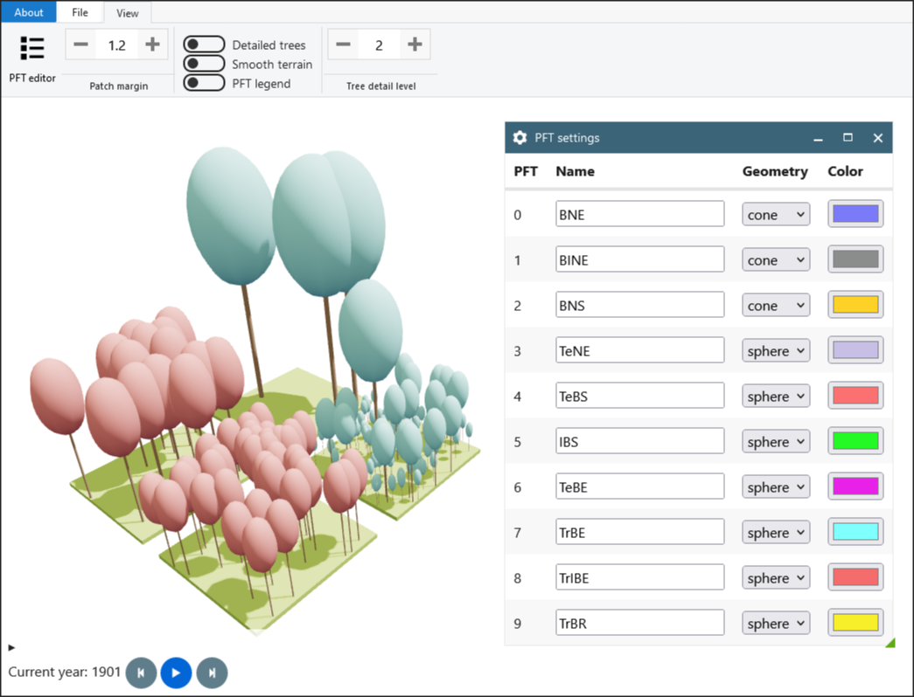
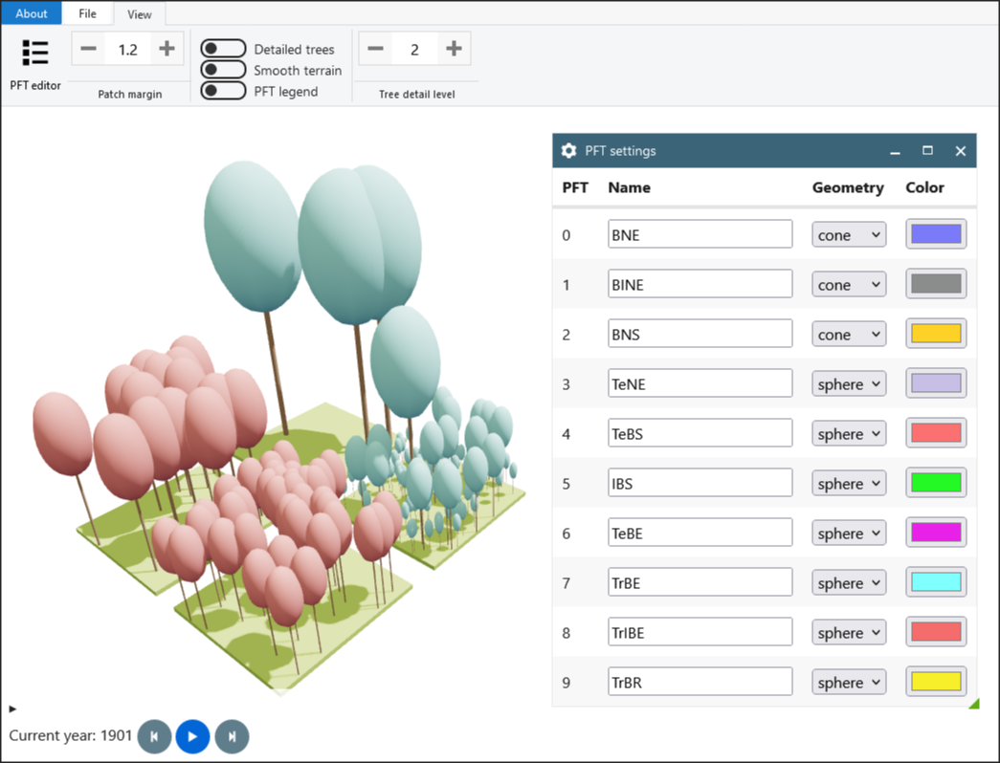

VegView
A vegetation model viewer for LPJ-GUESS.
 

Developed by Joakim Bohlin, InfraVis
Getting started
The application is already live at akodiat.github.io/vegView/, so you should only need to click the link.
To upload, select "File", "Load data" and browse for the data file on your computer. A vegetation structure file, e.g. "veg_struct.out" is expected, but you can also add additional data, such as "cpool.out" and "lai.out", by uploading multiple files at the same time (Ctrl-click to select multiple files). Finally, click the "Load" button to load the data.
File output
- Image: Saves the current view as a PNG image. Use the dropdown arrow next to the camera button to increase the multiplier for higher-resolution images.
- Video: Create a video of the trajectory. Use the dropdown arrow next to the camera button to increase the multiplier for higher-resolution images. See also [Advanced video export] below.(#advanced-video-export).
- glTF Export the scene as a glTF 3D shape file.
- CSV Export a CSV file containing all the data (including individual tree coordinates).
View options
- PFT editor: Change which PFT id corresponds to what colour and shape
- Patch margin: Update the distance between patches. A value of 1 means no margin. A value of 1.2 means 20% margin.
- Detailed trees Toggle to show detailed trees, with branches and foilage.
- Smooth terrain Toggle to show a smooth interpolated surface connecting the patches.
- PFT Legend Toggle the PFT legend on or off. The legend will also be visible in videos.
- Tree detail level Set the number of times tree branches should split. Be aware that high values will make the visualisation really slow and might cause the WebGL context to crash.
Running locally
If you want to run the code locally, you need to start a static webserver. If you have python 3 on your system, navigate the root of the repository and type:
python -m http.server 8000
If you don't want to install python, a full list of alternative oneliners is available here: gist.github.com/willurd/5720255
Once the static server is running, go to localhost:8000
Documentation
Code documentation is found at akodiat.github.io/vegView/docs.
To compile the documentation (and generate the docs/ directory), call jsdoc with the included config in the repository root:
jsdoc -c jsdocConf.json
The 3D visualisation is all accomplished using the library Three.js, so you might also want to have a look at their documentation.
API
The VegView API can be accessed through the web developer console.
All relevant functions and objects are found as members of the api object, e.g. api.camera, api.patchManager, api.nextYear(), api.exportCSV(delimiter).
More information can be found in the documentation. As noted above, it is also good to have the Three.js documentation at hand.
Advanced video export
While having the video export open, you can customise more options through the API:
// Set your own values here if you want. If you don't specify format, framerate, or scaleFactor, the UI values will be used.
let format='webm', framerate, scaleFactor, distance=100, height=50, nOrbits=4
api.exportOrbitingVideo(format, framerate, scaleFactor, distance, height, nOrbits)
You can also write your own cameraPathFunction, here specified as an anonymous arrow function. The function below moves the camera in a line from its current position towards the origin.
// Set a constant target at the origin
const target = new THREE.Vector3(0,0,0);
// Start at the current camera position
const startPos = api.camera.position.clone();
// Call exportVideo with a custom cameraPathFunction
// (and with format='webm', framerate=10, and scaleFactor=1)
api.exportVideo('webm', 10, 1, progress => {
const position = startPos.clone();
position.lerp(target, progress);
return {position, target}
});
The function cameraPathFunction needs to takes a trajectory progress parameter, normalised between 0 and 1, and returning an object with a position and a target vector:
{
position: THREE.Vector3,
target: THREE.Vector3
}